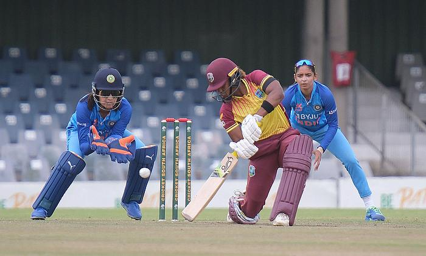

CRICKET
Cricket is a bat-and-ball game played between two teams of eleven players on a field at the centre of which is a 22-yard (20-metre) pitch with a wicket at each end, each comprising two bails balanced on three stumps.Cricket is one of the most famous sports in the world that has been uniting nations on the field since its popularity. Here are the basic rules of cricket and how cricket scoring works to help you understand the game better.

No. Of Players : 11 players
A typical Cricket game has 11 players in each team. It is fundamentally very similar to baseball. It is played with a bat and a ball. The center of the field is a rectangular area of 22 meters called a pitch.
Popularity :
Cricket is the most widely played sport in India, and Indians all across the subcontinent have a passionate dedication to the game and a dedicated fanbase for it. Even if just 75% of people watched cricket, that's still about a billion people, which is one-eighth of the total population of the planet.

> Cricket rules are not that complicated to understand. Cricket involves five basic equipment - the ball, the bat, the wickets, stumps, and the bails. These are the ABCs of cricket and will help you understand the rest of the rules.
> Cricket is a team game played between two teams of 11 players each. The 11 players constitute batsmen, bowlers and a wicket keeper.
> The match is usually played on a large circular or oval shaped ground. There is also a smaller inner oval with a 22 yard pitch at the centre. At each end of the pitch is a set of three wickets with two wooden bails atop them.
Rules :
> Cricket rules are not that complicated to understand. Cricket involves five basic equipment - the ball, the bat, the wickets, stumps, and the bails. These are the ABCs of cricket and will help you understand the rest of the rules.
> Cricket is a team game played between two teams of 11 players each. The 11 players constitute batsmen, bowlers and a wicket keeper.
> The match is usually played on a large circular or oval shaped ground. There is also a smaller inner oval with a 22 yard pitch at the centre. At each end of the pitch is a set of three wickets with two wooden bails atop them.